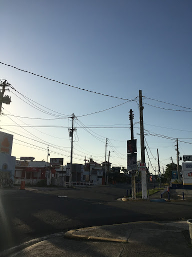
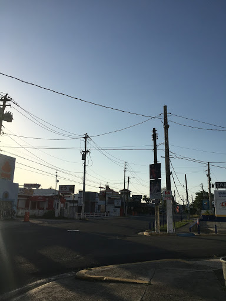

36 Hours
Ana T Rodriguez Punta Las Marías, Puerto Rico
Samantha Vogel Laguna Beach, California
Hannah Zipf Summit, New Jersey
David Moore Long Island, New York
Elizabeth Fisher Temecula, California
Reiko Grant Seattle, Washington
Samantha Vogel Laguna Beach, California
Hannah Zipf Summit, New Jersey
David Moore Long Island, New York
Elizabeth Fisher Temecula, California
Reiko Grant Seattle, Washington
This is the 36 Hours Project. Something about NND2 and Kia and how these students are writing about their daily lives in quarantine. This is the 36 Hours Project. Something about NND2 and Kia and how these students are writing about their daily lives in quarantine.
By Ana T Rodriguez
When I walk outside with one of my three dogs, I tend to see the same amount of cars on the road as one would before quarantine began. For about a week in the beginning of April, governor Wanda Vazquez said that depending on the last number of your license plate, you can drive one day yes and one day no. During that week, the streets looked strangely deserted. When the governor decided to ditch that restriction, the streets quickly returned back to normal, with cars passing by consistently all day.
I am in a neighborhood of San Juan named Punta Las Marías. When I step out of the urbanization, I can either walk right towards Ocean Park, where passion fruit flowers have bloomed along one of the neighbor’s fences. If you keep walking, you will turn right back when you reach El Último Trolly, a beach that sits right before reaching the Ocean Park neighborhood, because the police are always there and will either try to flirt with you, or tell you to go home as people were not supposed to walk outside during this time of quarantine. Usually, one cannot walk along the sand from El Último Trolly to Ocean Park’s beach because of high tides. Now, the tide is low, and the two shores have connected. Walking past there at the moment will ensure the police stopping you on their 4 track vehicles.
If you walk to the left from Punta Las Marías, you will walk towards Isla Verde. The beach there is now off limits as well, and the shores have eroded a lot since quarantine started. Before reaching the deeply missed El Churry, a food truck that sells tripletas at 3 am, you see the skate park to your left. This skate park was created? by a guy called Chemi Rosado-Seijo a few years ago, and he recently built a makeshift skate bowl in the middle. Almost every inch of cement in the park, excluding the floor, is painted or tagged on. Graffiti inspired letters are all over, names and pseudonyms painted over each other, and stickers frequently seen in skate or surf shops can be found peeling off of walls. It is beautiful and even therapeutic to be there. The ocean is right behind it, and you don’t even have to get too close to feel the breeze of the water coming from waves splashing rocks and abandoned pieces of cement. Since it is two minutes walking distance from my house, I have gone a few times to draw or paint on the concrete walls that stand alone there. I have run into the same three people each time: Joshua, Ivansito, and Friedel.
I met Joshua the first day I went to paint alone. We greeted each other by waving our hands at each other from a distance, it was awkward. He is 26 and appreciates art and painting deeply, but expressed to me that he has lost inspiration and motivation throughout the years. Every time we speak, I find myself giving him a pep talk as he can be very hard on himself and assume he will not get things accomplished. He tells me he is torn between staying on the island, where his friends, family, and favorite beaches are, and going back to Florida, where he has two cars and a home, but no friends. I do not know how to help him, but I try to cheer him up by sharing painting supplies with him. He is very stubborn and insists on going to the beach everyday even if it is just to sit there. The police have screamed at him about three times already as he skates on the street after the 7pm curfew.
Ivansito, I have known since we were in middle school. He is 19, about my same height of 5 feet, and an amazing skater. For years, I have seen videos of him that he shares on his social media jumping down entire flights of stairs on his skateboard and landing as if nothing happened, and he tells me that he has been going to the skate park almost every day, practicing consistently. He is always one to motivate others around him to practice hard, which I think is part of what makes him an amazing skater. He is one of those people who remind me how small San Juan is, as I have dated two of his friends in the past, and one boy who lived in his same building. He tells me that he escapes to the skate park when his mom asks him to go to the gas station to buy bread and snacks.
Friedel I have known since the beginning of high school. We had mutual friends and I remember that he was one of my roommate’s first kiss. He is 20 years old and also reminds me of how small San Juan is. He recently taught himself how to paint and is very talented at it. His works are abstract, and uses dark tones and smudges marker on canvas, along with spray paint and acrylic to make scenes of characters in dark rooms with televisions, lamps, distorted faces and many other elements he comes up with. One of the strangest things of all this on the island, is that we no longer kiss each other on the cheek, as we normally greet each other. Now it's a fist bump. Most times, not even that.
I recently reconnected with Adriana, one of my neighbors who I went to elementary school with. We have been taking walks with our dogs together. We often talk about being thankful for being able to at least walk our pets and have each other to talk during these isolating times. Later today, we might go to the skatepark and try to finish a painting we recently started just for fun on one of the big cement walls. We also have on our agenda to make dance choreography. We have been listening to a repertoire of house music, salsa, reggae dub, afrobeats, and reggaeton on our walks that have motivated us to take time during this upcoming summer to dance, as it is something we both have loved since we are little. We might just also fill up our water bottles with red wine for our next walk, which always includes deeply existencial talks about things such as connections throughout human history, fear leading to failure, and why music and dance is so important in this existence.


 



By Samantha Vogel
The beaches — the sole spectacles I look forward to each time I return home to Laguna Beach, California, are no longer open for lounging; the hiking trails, no longer open for exploring; the restaurants, no longer open for dining; and the artist exhibitions, no longer open for public viewing. What once defined Laguna Beach as ‘home’ to me has become irrelevant during COVID-19, or so I thought.
Though the typical livelihoods of Laguna have closed, my family and I have maintained sanity through routines — meals playing a large role.
Our 36 Hours: Breakfast
I start my morning with a large glass of water, followed by a cup of coffee, or two…. Coffee in the Vogel household is taken 3 ways, one for each member in the family. Coffee is prepared each morning by either Sarah Vogel, 61, my mother, or Randy Vogel, 65, my father.
Our consumption levels are similar, but our “orders” differ:
Sam’s Coffee: Drip with Oat milk Barista Blend (Specifically the Califia Farms because it tastes better than Oatly — trust me).
Sarah’s Coffee: Black. Only true way to enjoy the flavor. Would like to add that she used to take cream with her coffee and stopped only a number of years ago, and hasn’t cared too much for it since.
Randy’s Coffee: Randy takes his cream with a touch of coffee more often than the other way around, according to accounts from his wife and daughter(s).
With coffee the Vogel’s enjoy the simple, yet hearty oatmeal breakfast, also taken the same way each morning.
Sam’s oatmeal: Prefers ½ cup, more or less, of oats, topped with one whole banana, cinnamon, almond milk and, depending if feeling a need for a “health kick”, flax seeds.
Sarah’s oatmeal: Prefers ½ cup of oats, sometimes less, and tops with blueberries, raspberries — occasionally bananas? — and soymilk*.
Randy’s oatmeal: Prefers closer to an entire cup of oats, topped with soymilk. A simple take on breakfast.
Sarah’s oatmeal: Prefers ½ cup of oats, sometimes less, and tops with blueberries, raspberries — occasionally bananas? — and soymilk*.
Randy’s oatmeal: Prefers closer to an entire cup of oats, topped with soymilk. A simple take on breakfast.
After oatmeal and coffee has been consumed, each member of the family goes off on creating his or her own daily, modified, routine.
Our 36 Hours: The Routines
After breakfast, my father either gets ready to go for a mountain bike ride or to his office; my mother either goes hiking, does a at-home yoga practice (self-led) or works on her folding of one-thousand paper cranes to send to health care workers; and I typically like to go into town for a run.
I have been enjoying a three-mile run on Glenneyre — a street that runs parallel to Pacific Coast Highway along the California coast — or a four to five mile run along the highway itself, catching the occasional glimpse of the ocean. Having run varsity cross country for Laguna Beach High School, I could run through the streets of Laguna with my eyes closed. I know which side of town has more stop lights (North Laguna) and which side has less hills (South Laguna). I know never to run through Heisler Park on a warm day, unless wishing to take part in a human obstacle course; and I know how to make each route lead back to the high school.
We live within the city lines of Laguna Beach, about four miles outside of the main town, near plenty of hiking trails still open. The Nix Nature Center, a wilderness park out the 133, the canyon road that eventually leads to the freeway, remains accessible. However, it is not open to the public in order to prevent an influx of visitors.
In Laguna Beach — or wherever self-quarantine finds us — I believe it is imperative to get fresh air, even through a daily walk around the neighborhood. I try to spend as much time as I can outside. I often sit in my backyard to work on schoolwork, read, have breakfast or sit in class in order *********************
Finding a new project for the day has helped me and my family immensely during quarantine.
On Saturday, bored from spending all morning inside my house, I decided to help my dad with trail maintenance. My mom drove us to the side of the 133, and my father and I hiked into Nix with a pickaxe and a shovel — me with my film camera, my dad with the pickaxe and shovel — and hiked 20 minutes up one of the trails.
I tried my hand at using the pick axe. I came to find both exhausting and cathartic. I took pleasure in imagining the pickaxe was the entire Trump cabinet, Supreme Court appointees, and himself.
Our 36 Hours: Dinner
In Thomas C. Foster’s How to Read Literature like A Professor, he states that dinner, or the sharing of a meal, is an “act of communion”, a coming together and bonding of all persons who share the same meal. I agree with Foster. Each night when my family sits down to share the food we have prepared, we engage in discussion. Since asking one another what we did that day seems redundant, we find ourselves sharing stories, discussing politics, music, movies — all things we might never have considered had it not been for the circumstances. Meals, a simple routine, but a uniting time nonetheless.
I cook dinner for everyone at least three to four nights a week. I have always enjoyed cooking, but recently have found more pleasure in the making of a meal.
I enjoy creating my own recipes — often starting simple and mastering the simplicity first.
Here’s my recipe for homemade pasta sauce:
What you will need:
A box of small tomatoes (I used heirloom, but any kind will do)
Pasta (I used angel hair, but, again, any kind).
Garlic
Onion
Olive Oil (or if butter is preferred/ what you have/ use that!)
Dried Basil (or fresh)
Honey (or brown sugar, maple syrup, agave)
Pasta (I used angel hair, but, again, any kind).
Garlic
Onion
Olive Oil (or if butter is preferred/ what you have/ use that!)
Dried Basil (or fresh)
Honey (or brown sugar, maple syrup, agave)
Dice the onion and crush garlic into a medium pan with olive oil(or any larger pan will do) over medium heat. Stir for about two to four minutes, or until the onions start to appear translucent. Next add the tomatoes. (I recommend using more tomatoes than I had, which was one box of heirloom). Add water and cover with a lid until tomatoes become soft and begin to cook down. Then, with whatever stirring utensil at hand, press down on the tomatoes to allow for the juices to create the sauce and the tomatoes to cook down further. Add white wine, my mom keeps Trader Joe’s two-buck chuck (or Charles Shaw) for cooking; I will also mention the wine is optional and the recipe tastes fine without it. (I would say I used about a ⅓ cup water and ¼ cup wine). Cover the pan again and let the wine cook down. Once the wine has started to cook down and the sauce is beginning to emulate more of a sauce-like consistency, add in the basil, about a teaspoon (if no one was aware by now, I don’t measure, but taste as I go) and salt, again about a teaspoon. Then add about a ⅛ to ¼ teaspoon of honey (or whatever sweetener available, this is also not necessary to the recipe). Let cook for about 10 more minutes, or until a desired consistency, cook pasta, dump the cooked pasta in the sauce, mix to coat the pasta and viola! Dinner.
The Vogel’s give the recipe two-thumbs up, and I have been asked to prepare it again.
Meals are an important aspect of how my family is fairing in quarantine. Little routines like sitting down at the dinner table, drinking wine together, discussing the news of the day or what movie in our obscenely large DVD collection we should watch next, have provided us a small slice of normalcy? during this uncertain time.
To close out my day, I have been alternating between enjoying a movie or trying my hand at writing just to write, so journaling. I have also been re-reading the Harry Potter series for a third time (I started two weeks ago and am currently finishing the fifth, of seven, book). I have found more satisfaction in finishing small writing or photography projects I have assigned myself during quarantine. I find it important to take a step or two back from what I love in the context of required assignments and completing work in order to publish or show to others. The true joy in creating art, I have found, is that it’s a personal reflection of how I am coping, and I need not broadcast it to the world to try and make others see or understand, and only be discouraged when they do not. I break the rules of journalism here to say this to my readers: Do what you love, focus on it, but focus and do it for yourself; I promise you’ll find you seeing yourself as a creator in a whole new light.
By Hanna Zipf
Using Sidewalk Chalk to Spread Messages of Hope
Keeping a community connected in the wake of COVID-19.
SUMMIT, NJ- Named for being located at the top of the Watchung Mountains, the town of Summit, New Jersey is a suburban spot that longtime residents find to be worth the climb. The six square miles that make up the homes and businesses of Summit offer a mix of city chic with modern glass buildings and outdoor adventure with hiking trails and public gardens. Summit boasts an eclectic downtown that fosters a variety of boutiques and restaurants. Last spring, small business owners worked with their doors propped open, and routinely offered a smile with passersby. But in the past weeks, life in Summit has come to a disturbing halt. As residents isolate themselves in their homes, the streets have fallen silent. Despite the hardships that the COVID-19 pandemic has brought to local businesses, employees, and the overall economy, Summit residents have found innovative ways to keep the feeling of their tight-knit community alive.
On March 21, New Jersey Gov. Phil Murphy directed all non-essential businesses like salons, theaters, and shopping malls to close indefinitely. On April 7, the governor issued the same closures for state parks and forests. Now under stay-at-home orders, the outdoors is one of the few places where people can venture. With social distancing in mind, Summit residents have since stepped outside their homes to chalk their sidewalks and driveways, crafting inspiration for themselves and others.
Morris Avenue is one of Summit’s busy main streets with many homes, schools, and businesses. It has also become much more colorful. On a clear evening in late April, William Zipf, 17, who attends Summit High, carried a large dusty bucket of chalk out from his backyard shed. Trudging along the asphalt driveway, he scoped out what he felt was the perfect place to work. He dropped the bucket at the edge of his family’s driveway, which hit the ground with a loud thud. Reaching for pastel colors of blue, pink, orange, and green, he began to craft his version of vibrant and beautiful. An hour later, as the sun began to set, he packed up his bucket, and wiped his dusty hands on his gym shorts. Heading inside, returning home, he left the words “Spread Love” in slanted, capital letters on the edge of his driveway, hoping it would bring a smile to a stranger’s face.
Fences, pavements, windows, and front yards have become the most unlikely canvases. Once decorated, they are a community symbol for resilience and hope. Posters boasting uplifting quotes hang outside homes, and the same messages are written on pavements where they are viewed by passing cars or joggers. These creative efforts are reminders to people that they are not alone during this time of uncertainty. #ChalkYourWalk has flooded social media during COVID-19 since March. With over 30,000 hashtags on Instagram, the movement is a testimony of strong communities everywhere.
Art has proven to bring the people of Summit closer together. There are flowers, smiley faces, and words like “Stay Positive” and “Summit Strong”. #ChalkYourWalk has been used to show appreciation for frontliners working to fight COVID-19. Messages thanking them can be seen throughout the entire town. They’re drawn on pavements or written on posters that hang in front of homes, churches, and schools.
“Seeing those sweet drawings makes stepping out of the house worth it,” said Jacki Norwood, 53, a Summit resident who still commutes to her office job three times a week. She said she appreciates the efforts of her neighbors who are bringing a new perspective to the pandemic. “It’s the simple things that can make you smile.”
By David Moore
By Reiko Grant
Seattle is a city known for its gloomy, persistent rain, and its stronghold in the technology industry. But those like me who have grown up in Seattle, or who have raised a family here, will tell you that it is much more. Situated between the Pacific Ocean and the Cascade Mountain Range, Seattle has a hidden bureau of delicious restaurants, art museums, and an evolved music scene.
The tourist season comes in late spring, and hits hardest during July and August when the rain temporarily ceases. Tourists come for the Space Needle, the seafood and busyness offered by Pike Place Market, and popular art exhibitions, such as Chihuly Garden and Glass located in the downtown Seattle Center. But for the first spring since the city can remember, tourism is not a peak annoyance, especially downtown, where last summer I would navigate crowds of people in the narrow brick streets, fighting my way to work through the crowds looking for fresh caught salmon being thrown through the air, a Pike Place Market tradition. Instead the roads have cleared. Traffic has quieted. And the skies are exceptionally magnificent come sundown, filled with clouds of cotton candy consistency, taking on pale reds and purples as the sun sets over the tree-covered hills of South Seattle.
Despite the lack of activity in the city, with restaurants, concert venues, and other non-essential businesses closed due to COVID-19 orders, 36 hours, outside of sleep, can bring many events, some of which memories are dredged up, and a sense of missing what we took for granted in our city is heightened.
On a recent Friday afternoon, after a collective five Zoom classes, my 15 year-old brother Whit and I went from our mom’s house to our dad’s. We brought along aspirin and ginger tea with the hope of easing my dad’s stomach ache. Three hours later, after a walk to the lake, peppered with cherry blossom trees and tall grasses, we return home to find our dad in unexpected pain. Attempting to stand up straight and walk to the kitchen, he could barely speak, as an acute pain took over his body, rooted in the right side of his stomach. I call 911.
Once the paramedics left with our dad, Whit and I nervously cleaned the house and called our grandmother to let her know what happened. We received messages from our neighbors, who offered support, food, supplies, anything we might need, after they heard the sirens and witnessed the flashing red lights. As we waited at home for news of our father’s condition, we talked about what we were doing with our dad last spring. We were eating celebratory tiramisu at Tutta Bella for Whit’s middle school graduation, and spicy baked chickpeas at Mioposto Pizzeria, and watching films at Ark Lodge Cinemas in our neighborhood of Columbia City, and meeting our neighbor’s month-old baby, and appreciating the company of those I’d missed while in New York, especially the Von Homeyers, a family with four boys, who we have known for nine years.
The next day, on Saturday, it is still 24 hours until my dad’s release from the hospital. Not allowed to go to the hospital, with the risk of COVID-19 transmission, we called him instead, and he gave us an update. His gallbladder had ruptured, which explained the pain, and he would need surgery to remove it. After news like this, Whit and I went with our mom to my favorite beach, Golden Gardens to relieve some stress. Unlike other beaches in Seattle that sit on the edge of Lake Washington, Golden Gardens, nestled close by in the Pacific Ocean, looks west toward the San Juan Islands. It is also the only beach in Seattle with proper sand, the other coastlines filled with rocky edges. There are so few people there and no sailboats that usually dot the water. We see, for the first time ever, seals ducking in and out of the water close to the shore.
Being home, the drives between houses have become more sacred. These are routes I have memorized over time, as we wind downhill through ancient trees toward Lake Washington, which we then follow south, views of the serene water interrupted by large houses and impressive gardens. The simplicity and beauty of the skies, the clouds, and the gardens that I had taken granted all my life are now more meaningful. And for the first time in a long time, I feel a sense of gratitude and love for Seattle. With so much of the city unavailable, I have learned to appreciate the parts of the city that are always accessible and offer a sense of calm amidst a time of uncertainty.
Whit and I discuss and list the places we will go once they hopefully open again and our dad is healthy, spots our family doesn’t often share with others, places we have coined as “ours” over the years. Manao, which serves street Thai food, our go-to for spicy eggplant, fluffy rice, and pad see ew. Momiji, our favorite Japanese restaurant. 20 Oz Tea for perfectly soft boba. The Frye Art Museum, The Elliott Bay Book Company, Frankie and Jo’s ice cream, and the Wednesday night farmer’s market. The little spots that hold so many memories we share with those close to us, like meeting my friend Charlotte and her little sister Stella for fresh berries, Indian food, and ice cream at the farmer’s market.
Even the feeling of isolation isn’t permanent. There are still moments of cheer, as strangers greet and wave to each other from opposite sides of the streets. The streets of both our mom and dad’s houses have cultivated their own unique sense of community — with “happy hours” that follow social distancing guidelines, and sharing meals, baked goods, and even toilet paper with one another — which has never been more appreciated. And despite missing so much due to the coronavirus and self-quarantining, the hidden parks Whit and I discovered long ago are still available to us — the gardens, the hidden lookouts over the shimmering lake, and the small unmown lawns bursting with daisies.
By Elizabeth Fisher
Serene views of the valley’s surrounding mountains, plentiful local produce and activities that keep the body moving and the mind present make Temecula, Calif. a calming space to quarantine during the COVID-19 pandemic.
TEMECULA, CALIF. — Like most other places in the world, Temecula, Calif.’s main attractions —wineries, golf courses and the state’s largest casino— are closed due to the COVID-19 regulations in Riverside County, Calif.. Regardless, the valley town has much to offer during these idle days. Located in between California’s two largest cities —south of Los Angeles and north San Diego, and 45 minutes inland from the nearest beach, Temecula is a suburban town of just over 100,000 people. One aspect that makes it unique are the hills that encircle the valley which ground the city in nature. The open space amid the town’s housing developments allows for small-scale wineries and horse ranches. Family owned restaurants, such as Le Coffee Shop, compete with the town's many chain dining options. However, the smaller businesses have faithful customers for good reason: many of the non-chain restaurants prepare delicious meals —from burritos to sushi— right in front of customers, connecting people to their food and the community. Even when facing stay-home orders to stop the spread of COVID-19, Temecula residents maintain their active, healthy lifestyles and continue to stay positive and community-oriented amid the pandemic. Below is a guide to making the most of 36 hours quarantined in Temecula.
Friday
1:00 p.m. Tacos to-go
Begin 36 hours in Temecula with lunch at Aztek Tacos, a small restaurant centered on Mexican food. During the pandemic, it is open daily for takeout only, from 9 a.m.to 8p.m., and a face mask is needed to enter. The shop makes tortillas on-site, which are best enjoyed when eating one of the shop’s popular burritos, such as the steak and shrimp, pollo asada or breakfast burrito. The shop also offers delicious tacos, tamales and other Mexican specialties. I order the California Burrito —a San Diego staple which has carne asada, french fries, sour cream, guacamole and cheese wrapped in a warm flour tortilla— and a homemade Horchata.
Begin 36 hours in Temecula with lunch at Aztek Tacos, a small restaurant centered on Mexican food. During the pandemic, it is open daily for takeout only, from 9 a.m.to 8p.m., and a face mask is needed to enter. The shop makes tortillas on-site, which are best enjoyed when eating one of the shop’s popular burritos, such as the steak and shrimp, pollo asada or breakfast burrito. The shop also offers delicious tacos, tamales and other Mexican specialties. I order the California Burrito —a San Diego staple which has carne asada, french fries, sour cream, guacamole and cheese wrapped in a warm flour tortilla— and a homemade Horchata.
4:30 p.m. Citrus grove stroll
Escape the sun in the shade of citrus trees and take a walk along a path of orange groves located in the hills behind Morgan Hill Park. Although public, this trail is a local secret and, even, a secret to most locals. The walk is just beyond a suburban housing development, which seems to disappear once enclosed in the full and fragrant orange trees.
Escape the sun in the shade of citrus trees and take a walk along a path of orange groves located in the hills behind Morgan Hill Park. Although public, this trail is a local secret and, even, a secret to most locals. The walk is just beyond a suburban housing development, which seems to disappear once enclosed in the full and fragrant orange trees.
7:00 p.m. Sushi at sunset
Picnic for dinner while taking in the sunset. Take out fresh sushi from Hana Sushi, a well-loved Temecula small-business where, typically, sushi chefs prepare hand cut rolls at the bar in front of customers. Although customers can no longer watch chefs roll their sushi, the refreshing cucumber salad and the flavorful signature rolls will taste as though they were made minutes before pick up. Receive the sushi and drive to the top of one of the hills located off of Jedediah Smith Road and face west. Then, watch the Temecula sun melt into the valley’s green hills.
Picnic for dinner while taking in the sunset. Take out fresh sushi from Hana Sushi, a well-loved Temecula small-business where, typically, sushi chefs prepare hand cut rolls at the bar in front of customers. Although customers can no longer watch chefs roll their sushi, the refreshing cucumber salad and the flavorful signature rolls will taste as though they were made minutes before pick up. Receive the sushi and drive to the top of one of the hills located off of Jedediah Smith Road and face west. Then, watch the Temecula sun melt into the valley’s green hills.
Saturday
8:00 a.m. Old Town Farmers Market
Every Saturday morning, local farmers and food vendors gather in Old Town Temecula, offering fresh organic fruits and vegetables. Typically, the market also offers art, handmade soaps, candles and lotions. However, now the wares are limited to food vendors only. The market continues to offer spring produce, stunning flowers, such as sweet peas and sunflowers, fresh baked bread, Temecula olive-oil and food items like tamales, crepes and spanakopita. Speak at distance with farmers and artisans and stock up on avocados, oranges and an assortment of berries.
Every Saturday morning, local farmers and food vendors gather in Old Town Temecula, offering fresh organic fruits and vegetables. Typically, the market also offers art, handmade soaps, candles and lotions. However, now the wares are limited to food vendors only. The market continues to offer spring produce, stunning flowers, such as sweet peas and sunflowers, fresh baked bread, Temecula olive-oil and food items like tamales, crepes and spanakopita. Speak at distance with farmers and artisans and stock up on avocados, oranges and an assortment of berries.
10:00 a.m. Quiche, coffee and conversation
A few streets over is Le Coffee Shop, a French bakery and cafe that serves handmade pastries and French dishes like croissants, quiches, muffins and crepes, and coffees made with organic beans from Central and South America and roasted locally. Order a quiche, a croissant and a coffee drink of choice and take it to-go. Enjoy breakfast on a bench near-by with a quarantine companion or read The White Album by Joan Didion for sentimental, yet cynical meditations on California.
12:00 p.m. Windows-down drive
Take a drive through one of the city’s more rural roads with the car windows down and the radio loud. Go deeper into the surrounding valley and head down Pala Rd. toward U.S. Highway 76 to be surrounded by shaded greenery, or drive along Pauba Rd. for a wide-ranging look at Temecula’s many wineries and horse ranches amongst rolling hills. Drive carefully, as these roads are winding and steep.
3:00 p.m. Yoga, pool-side
Temecula yoga studios are closed, but many instructors are offering classes online. I take my mat pool-side, in my backyard to create a calming space and tune into a class, centering myself amongst the Temecula breeze. After completing a few Sun Salutations in the afternoon sunlight, I realize that I may never need to go back to a proper studio again.
6:30 p.m. Cook and sip
Cook dinner with the ingredients bought from the farmers market. California’s produce is so fresh that intensive cooking is not required for a flavorful meal. While cooking, sip wine from one of Temecula’s many wineries, which can be bought at all local grocery stores and liquor shops.
8:00 p.m. Dinner party
Enjoy the meal (and more wine) and set a theme for the night with a specific playlist —such as disco, Italian summer or the 70s. Encourage others to wear clothes that compliments the music. If alone, consider reading a book that fits with the theme.
9:30 p.m. Movie that matches
End the night with a movie that accompanies the theme of dinner —or simply watch whatever is most comforting during this time.
End the night with a movie that accompanies the theme of dinner —or simply watch whatever is most comforting during this time.
Sunday
9:00 a.m. Morning run (or walk) with a view
Join Temecula’s prominent exercise community by taking a run along a trail off the beaten path. The work out will be rewarded with blue-skied views and wildlife sightings —bunnies, roadrunners and lizards (oh my!). I never time myself though, in case I want to stop and smell the many types of flower aligning the trail.
Join Temecula’s prominent exercise community by taking a run along a trail off the beaten path. The work out will be rewarded with blue-skied views and wildlife sightings —bunnies, roadrunners and lizards (oh my!). I never time myself though, in case I want to stop and smell the many types of flower aligning the trail.
11:30 a.m. Gratitude brunch
Finish the weekend with an indulgent bruch. Include the berries from yesterday’s market and make fresh-squeezed juice or mimosas with the oranges. Before eating, I share with others, or journal for myself, whatever it is I am grateful for during this uncertain and unfortunate time. Some days it is the company I am with, other days it is the blue sky or the food on my plate, but most often, it is another day to identify the good in life. There is so much.
Finish the weekend with an indulgent bruch. Include the berries from yesterday’s market and make fresh-squeezed juice or mimosas with the oranges. Before eating, I share with others, or journal for myself, whatever it is I am grateful for during this uncertain and unfortunate time. Some days it is the company I am with, other days it is the blue sky or the food on my plate, but most often, it is another day to identify the good in life. There is so much.